TABLE OF CONTENTS
1.User Types
2.Login
Help
Logout
3.Student
My profile
Search Course
Enroll Course
View all courses
View registed course
View timetable
View transcript
View program progress
4.Instructor
My profile
Waive prerequisite
Grade students
5.Administrator
My profile
Mail grades
Add new student
There are 4 types of users that can log in to the TUESS. Each user type has certain privileges that carry forward. They are defined below.
Student - Can View, Search and Register courses, can Change personal profiles, and can view timetable, transcript, and my program information.
Instructor- Can waive prerequisites for a particular student, view all courses, and grade students who are in his class.
Administrator- Can mail grades to each student by email, main instructions to new students of university, and add new student to the system.
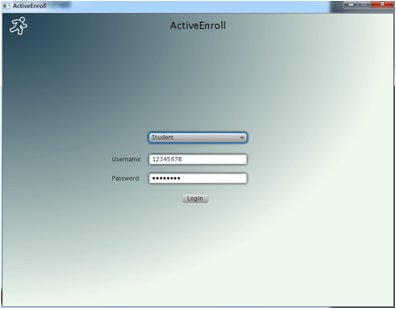
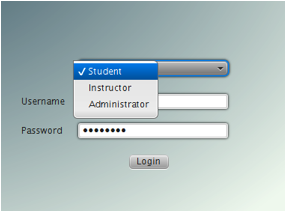
Figure 1 - The Login Page
This login window is the first screen that the user will see when you run the Library Management Software. The figure above shows the login window.
To log in first select category from three options: Student, Instructor and Administrator. Enter your User ID and Password, and hit the "Login" button to Login. If either User ID or Password is incorrect, an error message will notify you. If you cannot remember ID or password, you will get the tip to contact the administrator for more assistance.
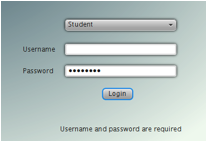 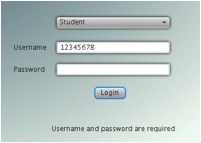
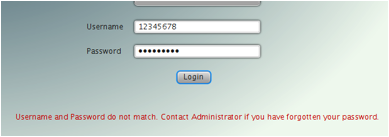
Figure 2 - Login Error Messages
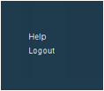
Figure 3 - The help Page
If you have any doubts about how to use this software, you can click on the Help tab and find more guide on how to use.
Figure 4 logout Page
After finish using this software, you can choose to quit the software by clicking Logout.
The ActiveEnroll software uses a tabbed interface, and all the functions can be performed using the tabs on the left. Figure 1.3 shows the tab placements. They are organized in a streamlined way that allows the user to perform the most important tasks associated with each type of function.
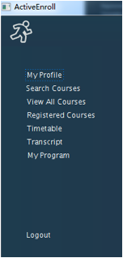
Figure 5 - Tab placements
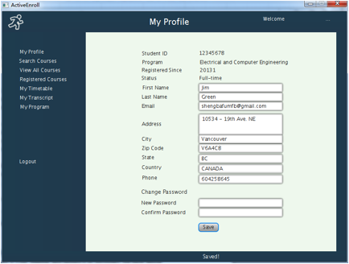
Figure 6 - my profile
The profile function was designed to update personal information, including name, email, address, phone number. And also, the bottom two lines are for changing the password, please make sure that you input the same password twice, and then the password would be updated successfully.
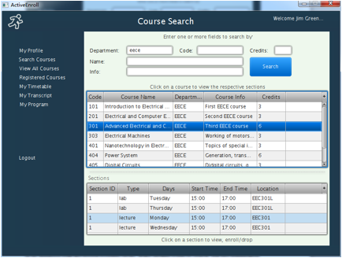
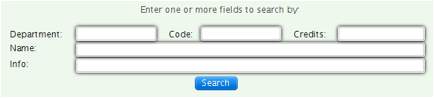
Figure 7 - search course
The Search function was designed to allow the user to find any courses that university has offered in its database with the fewest possible clicks. If the student wants to search, put any information matching Department, Code, Credits, Name and Info.
If there are any results, they will be displayed on the bottom table, with information of each section.
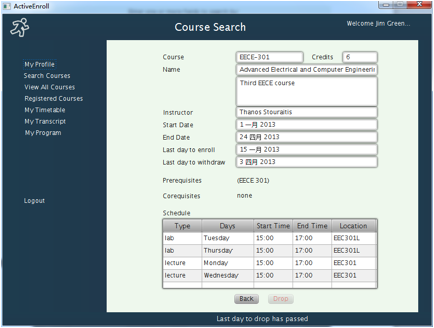
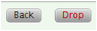 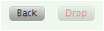
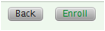 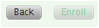
Figure 8 - Enroll course
If further click on the section row, the section information page will appear, and detail information about this section will be displayed, including course name, instructor name, start and end date, last day to enroll, last day to withdraw, etc.
At the bottom of the screen you can see the "Enroll" or "Drop" button if you are allowed to Enroll or "Drop the course. Use the "Back" button go to the previous page
Tips:
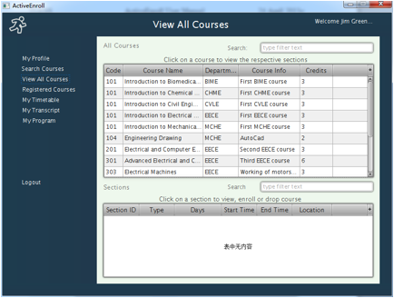
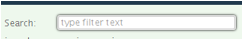
Figure 9 - View all courses
This function is for you to browse all the course randomly, to find which course you will probably be interested in. Any input would be attempted to find match from all the courses.
Here search function is also provided, just like the one inf search course function, you can click the individual section and view the details about it.
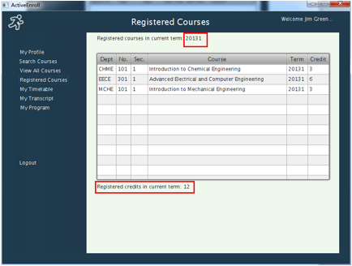
Figure 10 - View registered courses
This function is for you to view all the courses you have registered during search or browse process, including the Department, course number, section number, term and credit. And the bottom line is the total credits for this term.
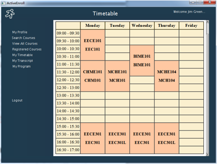
Figure 11 - Timetable
This function is for you to view the weekly time table of the courses you have registered during search or browse process. If time conflicted, the course to be added will not be enrolled.
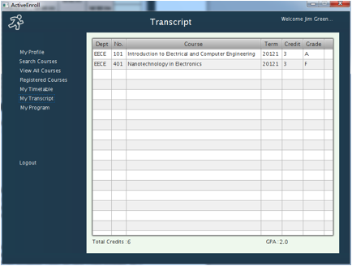
Figure 12 - Transcript
This function is for you to view the grade of the courses you have taken in all past terms. The left of the bottom line is the total credits you have achieved, and right of bottom line is you GPA of all the courses you have taken.
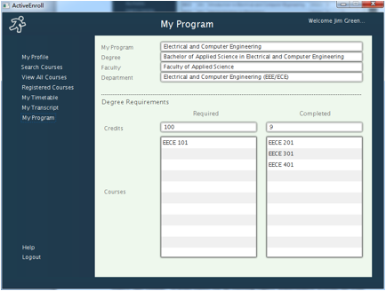
Figure 13 - View program requirements
This function is for you to view the progress status of your program. The top lines are your current program, faculty, department, as well as the degree you decide to apply for.
Also the degree requirements are listed in this function: the left column lists all the required courses and their total credits, and the right column lists the courses you have completed from those required courses.
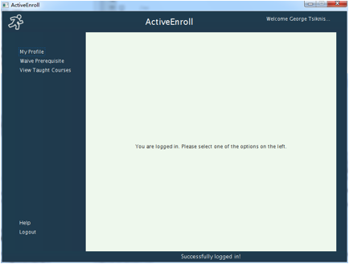
Figure 14 - Welcome page
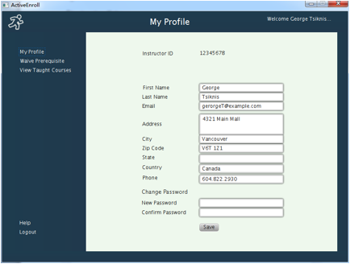
Figure 15 - instructor my profile
The profile function was designed to update instructor’s personal information, including name, email, address, phone number. And also, the bottom two lines are for changing the password, please make sure that you input the same password twice, and then the password would be updated successfully.
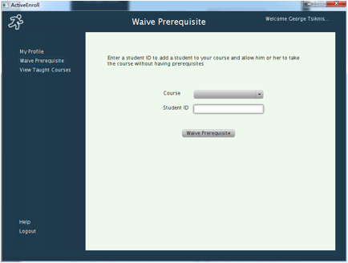
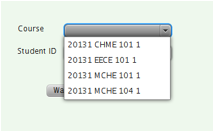 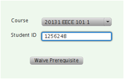
Figure 16 waive prerequisites
This function is designed to give instructor the right of waiving prerequisite requirements for students who are regarded eligible of taking the courses taught by this instructor.
If you want to perform the waive operation, click the course filed and choose the course you are going to waive requirements for, and then input the student ID who can register the course without meeting the prerequsites. Then click the Waive Prerequisite button.
Tips: Please make sure you input the right student ID, or else you will receive the warning that “Student ID does not exist”.
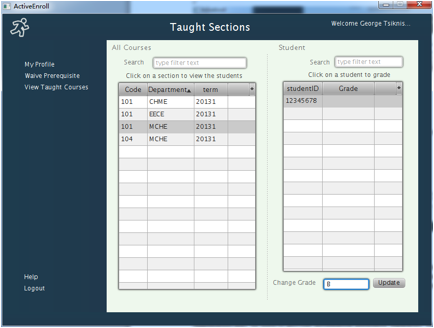
Figure 17 - Grade students
This function is designed to grade students. To perform this operation, firstly choose the course name from the left table of the window, after clicking on the course name, all the students in this course will appear on the right side table, then click on the student you are going to grade, and input the Grade for this student at the field right bottom of the window, click update to finish the grading process for this student. For both course table and student table, search function is provided, just input the course name or the student ID, all the matches will be displayed.
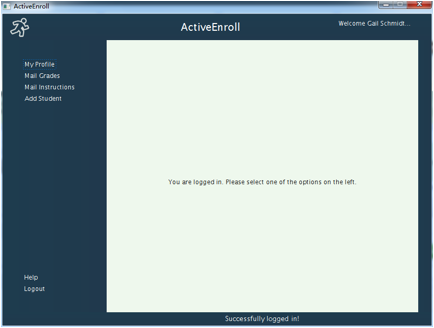
Figure 18 - Administrator welcome Page
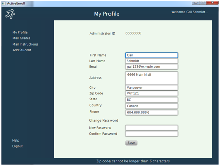
Figure 19 - Administrator profile
The profile function was designed to update administrator’s personal information, including name, email, address, phone number. And also, the bottom two lines are for changing the password, please make sure that you input the same password twice, and then the password would be updated successfully.
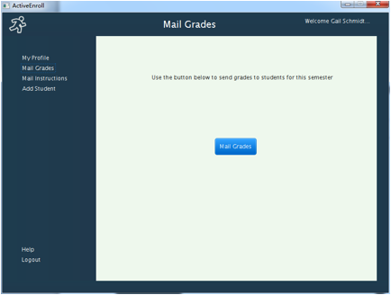
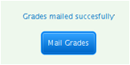
Figure 20 - Mail grades
This function is to mail the grades of all courses taken by last term by email. Just click on the Mail Grade button, the system will send corresponding course grades to each student. When mailing grades finished, message will show up “Grades mailed successfully”.
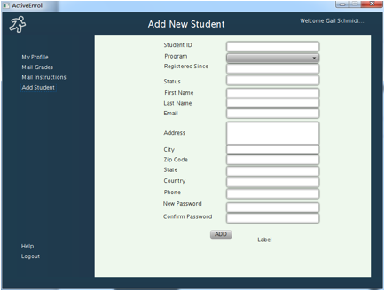
Figure 21 - Add new student
This function is designed to add newly admitted students to the enrollment system, so that these new students can start to register courses. Information needed includes student ID, name, email, address, phone number. And also, the password initial is finished here for new students.
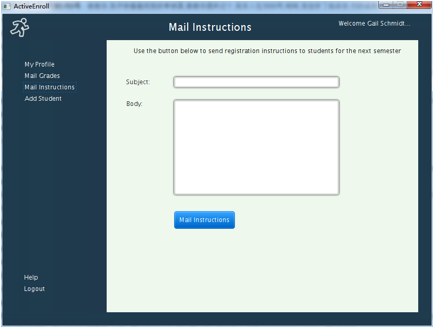
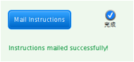
Figure 22 - Mail instructions
This function is to mail the instructions to all new students. Just click on the Mail Grade button, the system will send corresponding course grades to each student. When mailing grades finished, message will show up “Instructions mailed successfully”.
What you have read was a general overview of how to take advantage of the Rider Library Management Software. We have discussed a high level overview of the main functionalities of our software.
Thank you for using our software. We hope you have enjoyed it and hope that it has helped make your enrollment simpler than before. We strive to provide the best and hope that this software and our hard work have helped you in some way or the other.
Created by:
Wenhan Wu
Ibrahim Muhammad
Karthik Krish
Liang Chen
Prabal Sharma
Xin Ren